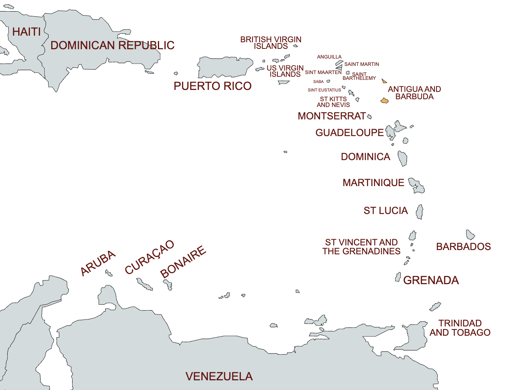
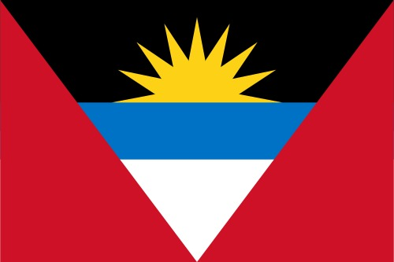
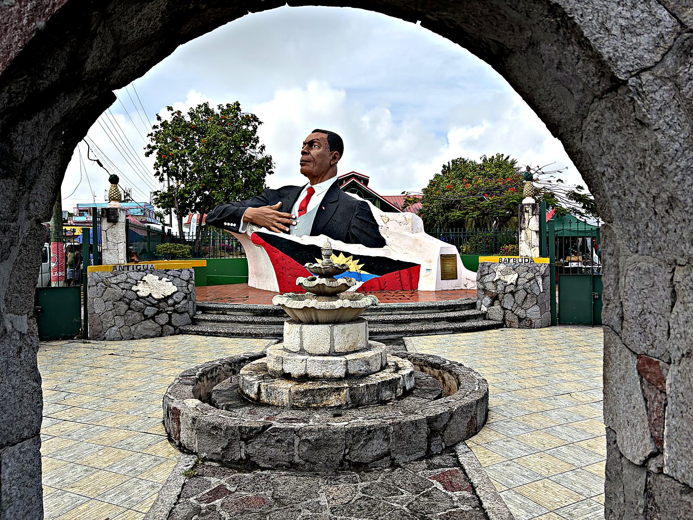
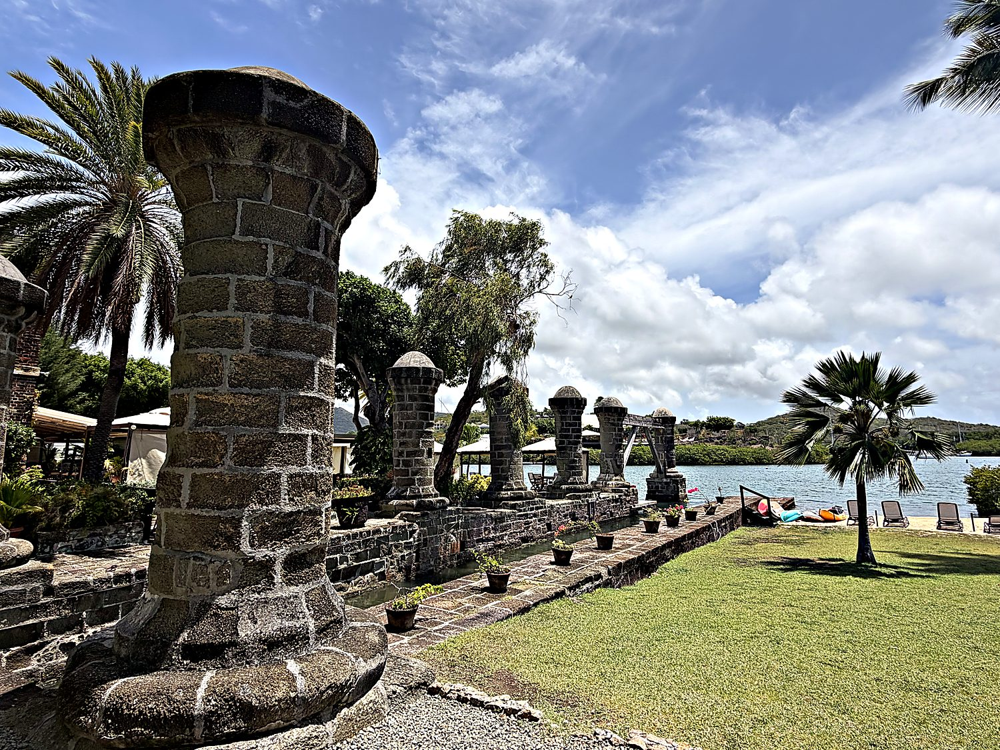
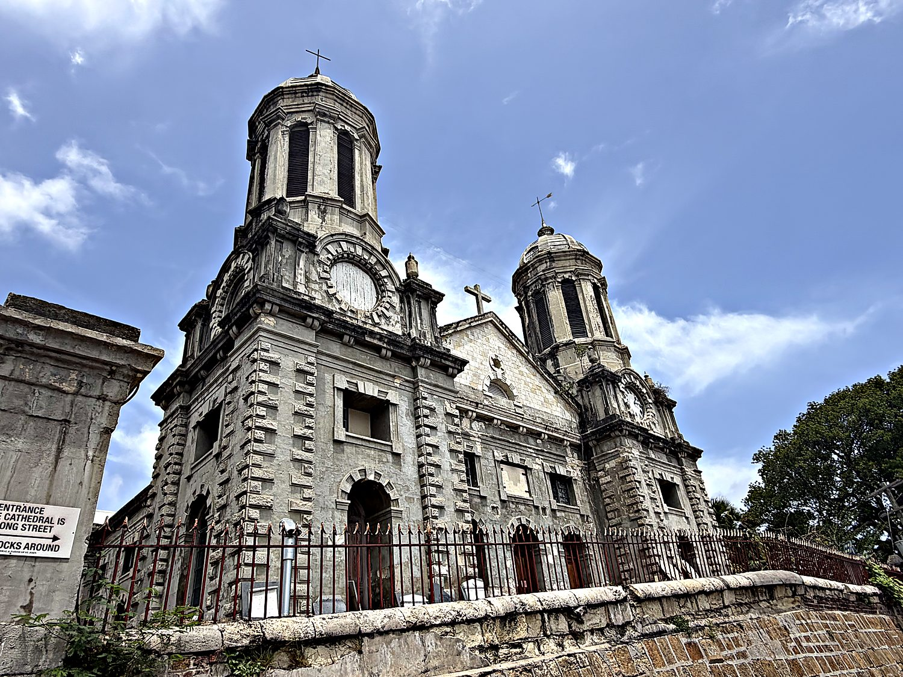

Antigua and Barbuda was the final stop on a hopscotch tour of the Caribbean in July 2026 and it gave me a fittingly eventful send-off. I had arrived during the nation’s carnival, so the minibuses were running less reliably than usual. To get to St John’s, I hitchhiked in a truck for the first time in my life, alongside two impossibly cheerful Dominican men who had moved to Antigua for better wages. The island welcomed me with roughly hourly downpours, none lasting more than a few minutes, which is apparently the local custom. Due to the minibus situation, I ended up walking from the city center to the airport, a journey that took me just over an hour in this small island. This was complicated by the fact that despite my diligent attention to my surroundings, I walked headfirst into a concrete stairwell, leading to a throbbing headache. Fortunately, my bemusement at my poor motor skills outweighed the pain, so I still enjoyed the walk.
My base was St. John's, the sun-bleached capital wrapped around a deep natural harbour on the northwest coast. Antigua and Barbuda is a twin-island nation of only around a hundred thousand people. Like much of the region, it markets its greatest natural asset with a straight face: Antigua claims a beach for every day of the year, which is very nearly true. Beneath the postcard turquoise, though, lies a heavier history. It was written in sugar, and in the forced labour of the enslaved Africans who made that sugar profitable.

The British claimed Antigua in 1632 and quickly turned the island into a vast machine for producing sugar. Its gentle terrain and reliable trade winds made it ideal for plantations, and the same winds powered the many mills. By the 18th century the island was carpeted with estates and overwhelmingly populated by the enslaved people who worked them. Antigua's superb harbours gave it a second role as the linchpin of British naval power in the eastern Caribbean. When emancipation came in 1834, Antigua unusually skipped the drawn-out "apprenticeship" imposed elsewhere and freed its enslaved population immediately. Freedom without land or wealth, however, left most former slaves bound economically to the same estates.

Real change arrived through the labour movement of the 20th century. Its central figure was Vere Cornwall Bird, a union organizer who rode the cause of workers' rights to become the dominant politician of the era. The country gained full independence from Britain on 1 November 1981, with Bird as its first Prime Minister. The flag, designed in 1967 by a schoolteacher named Reginald Samuel, packs the whole national story into a single wedge. A golden sun rises over black, blue, and white, marking the dawn of a new era. The black honours African heritage, the blue stands for hope, and the red for the population's energy.
It seems only fair to begin with the man the airport is named after. Vere Cornwall Bird began as a Salvation Army officer, became a firebrand trade unionist, and ended as the "Father of the Nation." He served as the country's first Premier and then its first Prime Minister. His family's grip on Antiguan politics proved remarkably durable. His son Lester succeeded him, and the Bird name hovered over the country's affairs for the better part of half a century, not always without a tinge of controversy. The monument is a reminder that small nations, too, produce their outsized founding personalities.

The undisputed historical jewel of the island is Nelson's Dockyard. It is the only continuously working Georgian-era naval dockyard left in the world, and has been a UNESCO World Heritage Site since 2016. The Royal Navy built it in the 18th century using the hands of enslaved labourers, and from here it repaired the warships that projected British power across the Caribbean. The dockyard takes its name from Horatio Nelson, who was stationed here as a young captain in the 1780s. By most accounts he found the posting hot, boring, and thoroughly beneath him. History has a sense of humour, and his name now adorns the place he could not wait to leave. The dockyard’s water is deep despite being nestled between land outcroppings, as you can see in the banner picture. This gives ships excellent shelter from hurricanes, and is why Antigua offered the British a prime strategic location to project power in the Caribbean.

Presiding over the capital from a low hill are the pale baroque towers of St. John's Cathedral, the Anglican seat of the island. It is also a monument to sheer architectural persistence. A church has stood on the site since 1681, but earthquakes have repeatedly reduced the building to rubble. The present structure was completed in 1845 and is at least the third attempt. Its builders lined the interior with stone in the hope of surviving the next tremor. The twin towers and the weathered iron figures at its southern gate have watched over St. John's ever since.
